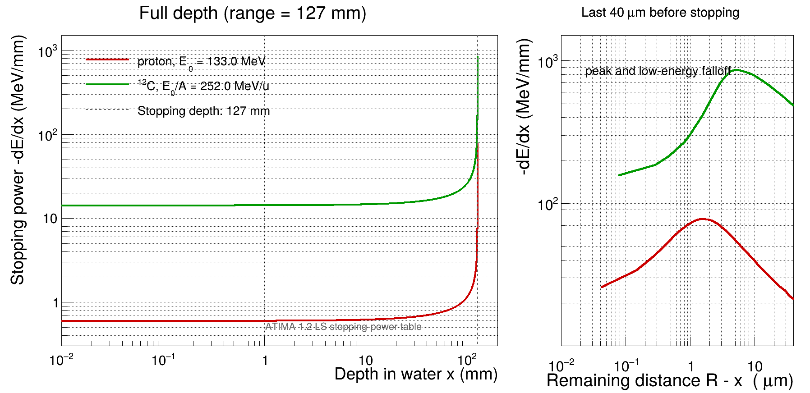

带电粒子在物质中连续损失能量。粒子减速后，单位路程内的平均能量损失通常在射程末端附近明显增大，形成 Bragg 峰。本作业使用 LISE++ 的射程和阻止本领数据，计算质子和 \(^{12}\mathrm{C}\) 在水中的 Bragg 曲线，并比较三种数值计算方法。
这里采用连续慢化近似（continuous slowing-down approximation, CSDA），假定粒子近似沿直线运动，并忽略能损涨落、射程涨落和核反应。所得曲线表示单个粒子的平均局部能量损失，不包含束流衰减、\(^{12}\mathrm{C}\) 碎裂和次级粒子输运，因而不是完整的实验深度剂量分布。
计算方法可参考 LISE++ 射程和能损教程，ROOT C++ 或 PyROOT 均可。
分别设置质子、水和 \(^{12}\mathrm{C}\)、水；水的密度取 \(1.0\ \mathrm{g/cm^3}\)。对两种粒子各导出射程 \(R(\varepsilon)\) 和阻止本领 \(S(\varepsilon)\) 数据，其中
\[ \varepsilon=\frac{E}{A},\qquad S(\varepsilon)=-\frac{dE}{dx}>0. \]
\(E\) 是粒子的总动能，\(A\) 是质量数。LISE++ 给出的 \(S\) 已是整颗离子的总能量损失率，不再乘以 \(A\)。
为了使 \(R\) 和 \(S\) 描述同一种连续慢化过程，两条曲线选用同一模型，并核对导出文件的表头。可在
LISE++ 中选择 micron，读入 ROOT
后统一换算为 mm：
\[ R(\mathrm{mm})=\frac{R(\mu\mathrm{m})}{1000},\qquad S(\mathrm{MeV/mm})=1000\,S(\mathrm{MeV}/\mu\mathrm{m}). \]
读入数据后，先画出或检查 \(R(\varepsilon)\) 和 \(S(\varepsilon)\)，并在射程曲线的单调区间内交换横、纵坐标，构造
\(\varepsilon(R)\)。所用数据覆盖 127 mm
射程对应的入射能量以及减速过程的低能区；TGraph::Eval
在表格范围外会外推，因此插值只在数据覆盖范围内进行。
对质子和 \(^{12}\mathrm{C}\)，分别由
\[ R_{\mathrm{target}}=127\ \mathrm{mm},\qquad \varepsilon_0=\varepsilon(R_{\mathrm{target}}),\qquad E_0=A\varepsilon_0. \]
求出每核子入射能量 \(\varepsilon_0\) 和总入射能量 \(E_0\)。再把 \(\varepsilon_0\) 代回 \(R(\varepsilon)\)，确认两种粒子的射程均为约 127 mm。
粒子到达深度 \(x\) 后，剩余射程和能量为
\[ r(x)=R_{\mathrm{target}}-x,\qquad \varepsilon(x)=\varepsilon\bigl(r(x)\bigr). \]
由此计算
\[ S(x)=S\!\left(\frac{E(x)}{A}\right)=S\!\left(\varepsilon(x)\right). \]
在 \(0\leq x<R_{\mathrm{target}}\)
取一组深度点并填入 TGraph；剩余射程到达表格下限时结束，不向停止点外外推。把质子和
\(^{12}\mathrm{C}\) 的曲线画在同一张图中：横轴为深度
\(x\)（mm），纵轴为 \(-dE/dx\)（MeV/mm）。从第一个 \(x>0\) 的深度点开始绘图，横轴和纵轴均使用对数刻度，并用图例区分粒子。
计算正确时，两条曲线都在约 127 mm 处终止，并在射程末端附近上升至峰值；峰后的低能下降集中在停止前的几个微米内。\(^{12}\mathrm{C}\) 的阻止本领整体高于质子。下图给出一种正常的显示效果，右图显示停止前最后 40 μm。

设定位置步长 \(\Delta x\)，从 \(x_0=0\)、\(E_0=A\varepsilon_0\) 开始逐步更新：
\[ S_i=S(E_i/A),\qquad E_{i+1}=E_i-S_i\Delta x,\qquad x_{i+1}=x_i+\Delta x. \]
每一步把 \((x_i,S_i)\) 加入
TGraph。若最后一步会使能量变为负值，应缩短该步或在有效数据范围的末端停止；不要把负能量传给
TGraph::Eval。
以 \(^{12}\mathrm{C}\) 为例，选择逐步减小的位置步长，比较所得停止深度和曲线。
设定每核子能量步长 \(\Delta\varepsilon>0\)。一次能量下降对应的总能量损失为 \(A\Delta\varepsilon\)，由此得到该步经过的厚度：
\[ \Delta x_i=\frac{A\Delta\varepsilon}{S(\varepsilon_i)},\qquad x_{i+1}=x_i+\Delta x_i,\qquad \varepsilon_{i+1}=\varepsilon_i-\Delta\varepsilon. \]
最后一步应使 \(\Delta\varepsilon\) 不超过当前的 \(\varepsilon_i\)。仍以 \(^{12}\mathrm{C}\) 为例，选择逐步减小的能量步长，比较停止深度和曲线。
从入射能量向低能方向计算，并在数据表覆盖的能量区间内结束。
把剩余射程法和两种离散积分写成可更换粒子数据与步长的函数。以 \(^{12}\mathrm{C}\) 为例，比较三种方法：
在减小步长后，若停止深度或曲线仍出现系统差别，应先检查总能量与 \(E/A\)、μm 与 mm、MeV/μm 与 MeV/mm 的换算，再检查曲线模型和插值范围。
根据相同射程下的两条 Bragg 曲线，解释质子和 \(^{12}\mathrm{C}\) 所需入射能量、阻止本领和 Bragg 峰的差别，并选择合理的步长复现 Bragg 峰后的下降端结构。